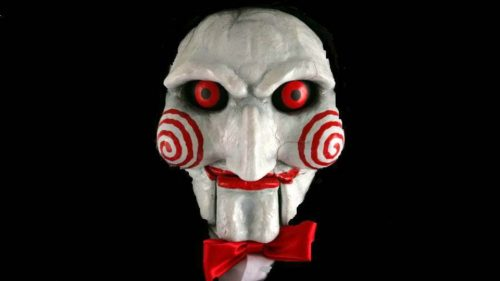

Let's play a game!

Get 3 points and you win! 3 strikes and I win!
Each correct answer will award 1 point.
Each incorrect answer will result in a strike.
3 strikes and you lose!
- Do you think I am over the age of 20? - Yes!
- Do I have any children? - Yes!
- Do you think I have any cats? - No way!
- Do you think I have lived in Seattle before? - Yes!
- Do you think I eat a banana every day? - No, I drink one!
Thanks for playing along. As you now know, I am 25 years old and have a 7 year old son. I really hate cats, but I am a huge dog lover! I lived in Seattle about 2 years ago, and am just moving back for school. I can't stand the texture of bananas, but I love the taste and well... they're healthy, so I drink one in my shakes every morning! I hope to get to know you all more as we grow together throughout our time here at CodeFellows. Thanks for stopping by!
- First & foremost, I enjoy hanging out with my family. My son really enjoys going to the skatepark and we have been spending a lot of our free time riding around the park together!
- I really love building drones from scratch, FPV racing drones or 5' commercial UAS rigs, they both give me my fix!
- I have a huge passion for racing drones competitively. I have travelled all over the United States racing them professionally and hope to continue this hobby/sport far into the future
- I spend a lot of my free time soldering electronics & playing with Rasberry Pi's/Arduinos.
- It has taken some time to grow on me, but I really enjoy running when I can. I find it a very good way to get out my jitters and get my exercise in, while also being able to get some good thinking and problem solving done.
- I love playing games of nearly any kind. Board games, video games, even tag with my son and his friends.
- As of lately, I have enjoyed learning anything and everything I can about coding & programming.
- I have a serious pizza addiction! It may not be the healthiest food, but it sure does hit the spot!
- I have and older brother and a younger sister who I really enjoy spending time with when I can. Everytime we are able to get together we have a blast as if we were kids all over again.
- Even though I have slowed down since having my son, I love anything and everything that gets the adrenaline pumping! Skydiving, riding motorcycles, tumbling... anything to get the adrenalive levels up!